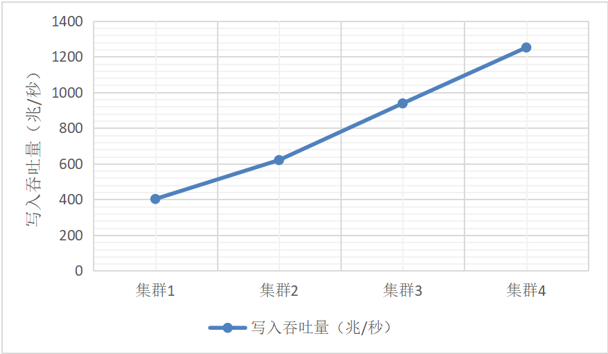
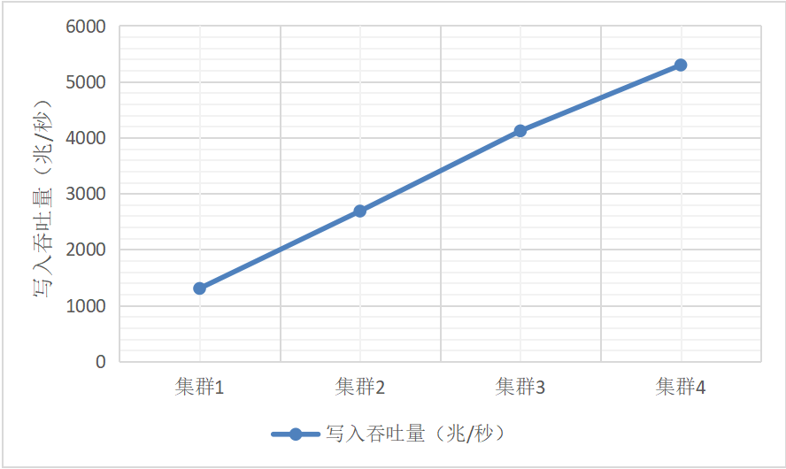
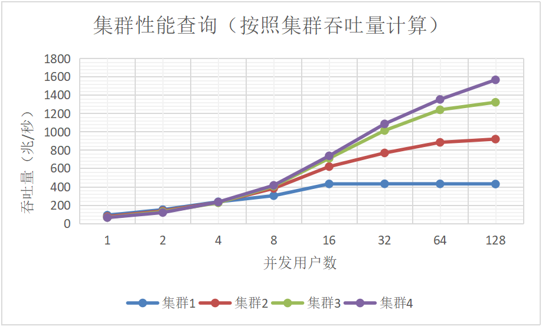
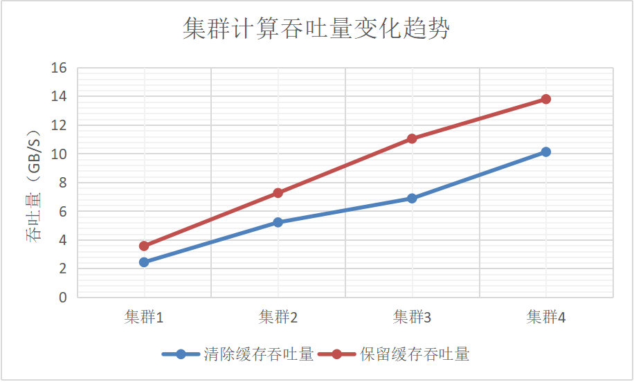
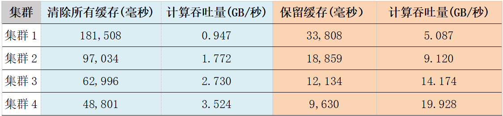
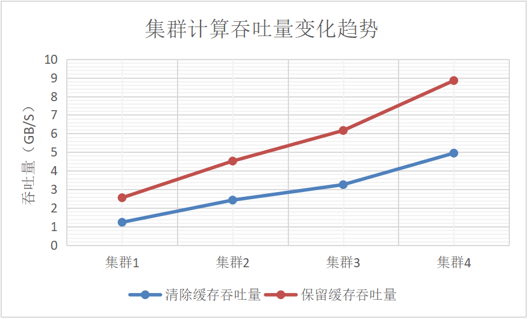

集群水平扩展性能测试
1. 概述
DolphinDB是一款高性能的分布式时序数据库，提供了分布式的存储和计算引擎，可以高效的满足金融和物联网等众多领域海量时序数据库的存储和计算用途。根据数据库排名权威DB-ENGINES 2020年8月发布的全球时序数据库流行程度排名，DolphinDB排名第12，位居国产时序数据库之首。DolphinDB数据库支持水平扩展，允许在线增加节点。数据库的元数据和副本数据支持冗余和高可用，多节点之间的数据复制支持强一致性，这大大降低了运维的难度和工作量。数据的写入支持事务，数据的读取支持快照隔离，这些特点也让数据库在没有应用层的支持下即可满足较为苛刻的业务要求。 一个分布式数据库对ACID以及分布式功能的支持越好，系统的开销也会越大。工程实现能力显得尤为关键，否则节点增加带来的性能提升会被高昂的分布式开销快速冲蚀。本次测试的目的是检测DolphinDB数据库的水平扩展能力，也即DolphinDB集群整体的性能和节点增长之间的关系。为此，我们部署了4个集群，节点数分别为2，4，6和8，对数据库的分布式写入，读取和计算三个方面做了对比测试。实验结果显示DolphinDB集群从2个节点扩展到8个节点，在读，写和计算三个方面，系统的吞吐量均得到了几乎线性的提升。
2. 测试环境
2.1. 硬件配置
测试使用四台配置相同的服务器（Server1，Server2，Server3，Server4），具体硬件配置如下：
- 主机：PowerEdge R730xd
- CPU：E5-2650 24 CPU核 48超线程
- 内存：512G
- 硬盘：HDD 1.8T * 12
- 网络：万兆以太网
- OS：CentOS Linux release 7.6.1810
2.2. 集群配置
部署了4个集群用于对比测试，每个集群分别包含1，2，3和4个物理服务器。每个物理服务器上部署2个数据节点，因此4个集群的数据节点数分别为2，4，6和8。每个数据节点使用16个CPU核，64G内存和4个HDD。控制节点（存储元数据的节点)配置一个。本次测试的目的是测试DolphinDB集群的水平扩展能力，控制节点是否高可用与测试内容无关。4个集群的资源配置如下表所示。
| 集群 | 部署机器 | 配置节点 | 集群资源占用 |
|---|---|---|---|
| 集群1 | Server1 | node1,node2 | 32Core，128GB内存，8 HDD |
| 集群2 | Server1 Server2 | node1,node2 node3,node4 | 64Core，256GB内存，16 HDD |
| 集群3 | Server1 Server2 Server3 | node1,node2 node3,node4 node5,node6 | 96Core，384GB内存，24HDD |
| 集群4 | Server1 Server2 Server3 Server4 | node1,node2 node3,node4 node5,node6 node7,node8 | 128Core，512GB内存，32HDD |
一个物理硬盘的读写吞吐量约为150MB/秒。一个数据节点读写的理论上限为600MB/秒。一个8节点的集群的磁盘吞吐能力的理论上限约为4.8G/秒。参数diskIOConcurrencyLevel配置为4，也即为每一个挂载的硬盘配置一个读写线程。将对一个磁盘的读写任务串行化到一个队列，避免了并发线程之间的磁盘读写竞争，有助于提升节点整体的读写吞吐能力。写入数据库的数据启用了数据压缩，压缩率约为20~25%。后续实验中发现集群的吞吐能力超过了磁盘的物理上限，就是因为启用了数据压缩。 数据的副本数配置为2。DolphinDB采用二阶段提交协议维护多副本之间的强一致性。DolphinDB的多副本冗余策略，不仅可以解决数据高可用的问题，也解决了负载均衡的问题。读数据时，可以就近选择或随机选择一个副本。
3. 数据写入性能测试
3.1. 测试方案
通过C++ API客户端，向数据库并发写入数据，每个客户端启动16个写入线程，每批次写入20万条记录，每个线程共计写入10亿条数据。每条记录45个字节，类型为 [INT, DATE, SECOND, DOUBLE, DOUBLE, INT, INT, INT, CHAR, SYMBOL]，所以每个线程写入45GB数据，每个写入客户端同时启动，写入客户端部署如表-1所示：
| 集群 | C++ 客户端 | 说明 |
|---|---|---|
| 集群1 | Server1 | 部署1个写入客户端，启动16个写入线程 |
| 集群2 | Server1 Server2 | 每个物理机器部署1个写入客户端，共部署2个，共启动32个写入线程 |
| 集群3 | Server1 Server2 Server3 | 每个物理机器部署1个写入客户端，共部署3个，共启动48个写入线程 |
| 集群4 | Server1 Server2 Server3 Server4 | 每个物理机器部署1个写入客户端，共部署4个，共启动64个写入线程 |
3.2. 测试结果
每个线程写入10亿条数据，吞吐量按照写入条数除以时间计算。由于每个集群配置两个副本，数据量乘以2，总体性能如下表所示。
| 集群 | 写入吞吐量(百万条/秒) | 写入吞吐量(兆/秒) | 按照2副本吞吐量(兆/秒) |
|---|---|---|---|
| 集群1 | 4.69 | 201.3 | 402.6 |
| 集群2 | 7.23 | 310.3 | 620.6 |
| 集群3 | 10.93 | 469.1 | 938.2 |
| 集群4 | 14.58 | 625.7 | 1251.4 |
表1: DolphinDB集群数据写入吞吐量随节点数量的变化

图1：DolphinDB集群数据写入吞吐量随节点数量的变化
上述测试中，我们将数据库的配置选项dataSync设置为1，也就是写入的元数据以及Write Ahead Log （WAL）必须强制刷入磁盘后，方可返回给客户端。现代操作系统为了提升磁盘写入性能，写入文件的数据通常先写入Page Buffer，然后再由操作系统批量将Page Buffer中的数据刷入磁盘。写入Page Buffer并不是完全可靠的，如果服务器掉电或操作系统崩溃均可能导致数据丢失。本次测试中元数据和WAL均写入一个SSD盘，写入吞吐量约在500MB/秒。由于每个物理服务器只配置了一个SSD盘，一个物理服务器上的两个逻辑节点实际上是共用了一个SSD盘。因此测试的4个DolphinDB集群写入能力的理论上限分别为0.5G/秒，1G/秒，1.5G/秒和2G/秒。第1个集群的吞吐能力约为理论上限的81%，第4个集群的吞吐能力为理论上限的63%。要想增加整个集群的写入吞吐能力，除了增加节点数量，还有一个办法便是每个数据节点进行垂直扩展，降低元数据写入延迟以及增加WAL的磁盘吞吐量。
如果是非生产环境，服务器掉电的概率极低，将配置选项dataSync设置为0，也可以大幅提升数据库写入吞吐量。关闭dataSync选项后，元数据的写入不再强制刷入磁盘，副本数据的写入跳过WAL，直接写入数据库文件（不强制刷盘）。从表2和图2的实验结果可以看出，在此配置下，集群的写入吞吐量是开启选项dataSync的近4倍，而且展示了非常理想的线性扩展能力，也就是集群的吞吐量几乎等于等于单节点的吞吐量和节点数目的乘积。
| 集群 | 写入吞吐量(百万条/秒) | 写入吞吐量(兆/秒) | 按照2副本吞吐量(兆/秒) |
|---|---|---|---|
| 集群1 | 15.2 | 652.3 | 1304.6 |
| 集群2 | 31.3 | 1343.3 | 2686.5 |
| 集群3 | 48.0 | 2059.9 | 4119.9 |
| 集群4 | 61.7 | 2647.9 | 5295.8 |
表2: 关闭dataSync选项后DolphinDB集群数据写入吞吐量随节点数量的变化

图2：关闭dataSync选项后DolphinDB集群数据写入吞吐量随节点数量的变化
4. 数据读取性能测试
4.1. 测试方案
四种集群配置下，通过C++ 客户端，从数据库中查询原始数据。测试每种集群配置情况下，随着并发用户数量的增加，集群读取数据吞吐量的性能变化趋势。为了避免客户端成为性能瓶颈，在不同的物理机器上分别部署客户端程序。 取数据方案是，每个连接随机取某天某只股票的所有数据，不断累加，直到取得数据总量超过1亿条，等所有用户取完，计算取的数据总量以及总的耗费时间的比值，作为集群吞吐量。 每个集群先写入4年数据，总的数据量约为2700亿条，数据量约12.6TB，压缩存储在磁盘上约3TB数据，这样可可以尽量避免并发用户取相同数据，模拟所有数据都从磁盘读取的情况。 每次取数据之前通过
echo 1 > /proc/sys/vm/drop_caches 命令，强制清空操作系统对文件的缓存，也就是每次强制数据库读取HDD磁盘上的数据文件，由于数据库总量很大，可以认为所有数据都是从磁盘加载，出现取重复数据的概率很低。
4.2. 测试结果
并发用户数按照1/2/4/8/16/32/64/128个进行读取测试，总体性能如表-3所示。
| 并发用户数 | 集群1吞吐量(百万条/秒) | 集群2吞吐量(百万条/秒) | 集群3吞吐量(百万条/秒) | 集群4吞吐量(百万条/秒) |
|---|---|---|---|---|
| 1 | 2.06 | 1.70 | 1.49 | 1.45 |
| 2 | 3.46 | 3.14 | 2.94 | 2.73 |
| 4 | 5.46 | 5.33 | 5.21 | 5.4 |
| 8 | 7.02 | 8.87 | 9.44 | 9.65 |
| 16 | 10.02 | 14.42 | 16.53 | 17.16 |
| 32 | 10.04 | 17.90 | 23.60 | 25.29 |
| 64 | 10.03 | 20.59 | 28.8 | 31.51 |
| 128 | 9.98 | 21.42 | 30.79 | 36.50 |
表3: 数据库查询吞吐量（百万条/秒）随节点数目和并发用户数量的变化
| 并发用户数 | 集群1吞吐量(百万条/秒) | 集群2吞吐量(百万条/秒) | 集群3吞吐量(百万条/秒) | 集群4吞吐量(百万条/秒) |
|---|---|---|---|---|
| 1 | 88.4 | 73.0 | 63.9 | 62.2 |
| 2 | 148.5 | 134.8 | 126.2 | 117.2 |
| 4 | 234.3 | 228.7 | 223.6 | 231.7 |
| 8 | 301.3 | 380.7 | 405.1 | 414.1 |
| 16 | 430.0 | 618.8 | 709.4 | 736.4 |
| 32 | 430.9 | 768.2 | 1012.8 | 1085.3 |
| 64 | 430.4 | 883.6 | 1239.4 | 1352.3 |
| 128 | 428.3 | 919.2 | 1321.4 | 1566.4 |
表4: 数据库查询吞吐量（兆字节/秒）随节点数目和并发用户数量的变化
当并发用户较少时，多节点查询原始数据并无优势，甚至性能会略微下降，原因是当用户很少时，数据从远程节点拷贝到本地C++客户端，网络开销占比较大，集群的并行能力发挥非常有限。 随着并发用户数的增加，集群的优势越发明显。当并发用户数达到128时，从集群1（1台物理服务器，2个逻辑节点）到集群4（4台物理服务器，8个逻辑节点），读数据的吞吐量几乎跟节点数目呈线性关系。 实验展现的另一个现象是，随着发用户数增加，线程切换频繁，磁盘竞争以及网络都会成为资源瓶颈，集群的读吞吐量会上升，但边际效用递减，最后达到极限。

图3：数据库查询吞吐量（兆字节/秒）随节点数目和并发用户数量的变化
5. 数据库计算性能测试
数据库写入4年美股的Level 1 TAQ（报价和交易）数据，总的数据量约为2700亿条数据，共计约12.6TB，压缩后存储在磁盘上占用空间约3TB。按照从简单到复杂，我们安排了三个计算型测试任务:(1)SQL多维过滤和分组计算， （2）分钟级K线生成和写入，（3）线性回归。这些任务的共同特点是计算需要的原始数据量非常大，但是计算结果的数据量非常小。 计算之前都需要从数据库文件读取数据。因此每个测试任务我们都考虑了两种情况：
- 清除所有操作系统缓存
- 保留操作系统缓存。如果数据节点的内存很大，可以发挥缓存的优势。
5.1. SQL多维过滤和分组计算
5.1.1. 测试方案
选择金融市场的微观结构分析作为计算任务。具体说，分析美股从早上9;30开盘到16:00收盘，股票报价的价差 (spread) 有何规律。为了更好的发现价差和交易时段之间的关系，将所有股票的所有报价按分钟进行聚合计算平均价差。为了避免单天数据的偶然性，选择了一个星期的报价数据，总的数据量约16.7亿条记录，43GB大小。完整的SQL语句如下。quotes表是一个按照日期和股票代码组合分区的分布式表。
select avg((ofr-bid)/(ofr+bid)*2) as avgSpread from quotes where date between 2007.08.01 : 2007.08.07, time between 09:30:00 : 15:59:59, ofr>bid, bid>0, ofr/bid<1.2 group by minute(time) as minute5.1.2. 测试结果
实验结果如表-5和图-4所示，不管有没有操作系统缓存，集群的计算吞吐量随着机器数量的增加几乎线性增长。计算下沉到数据侧，这样不需要将大量数据在节点间移动，只有处理后的少量数据汇总到发起节点做二次聚合处理。这种场景下的分布式计算，DolphinDB集群的计算吞吐量可以随着节点的增加而线性增加。值得一提的是在没有缓存的情况下，计算吞吐量已经超过了集群磁盘IO的理论上限，这是数据压缩的贡献。在有操作系统缓存的情况下，吞吐量有近50%的提升，这是因为在内存中读取文件数据，吞吐量增加了
| 集群 | 清除所有缓存(毫秒) | 计算吞吐量(GB/秒) | 保留缓存(毫秒） | 计算吞吐量(GB/秒) |
|---|---|---|---|---|
| 集群1 | 17,647 | 2.437 | 12,056 | 3.567 |
| 集群2 | 8,248 | 5.213 | 5,924 | 7.259 |
| 集群3 | 6,248 | 6.882 | 3,895 | 11.040 |
| 集群4 | 4,249 | 10.120 | 3,117 | 13.795 |
表5： SQL多维过滤和分组计算的吞吐量随节点数目的变化

图4： SQL多维过滤和分组计算的吞吐量随节点数目的变化
5.2. 使用map-reduce生成分钟级K线
DolphinDB不仅支持使用SQL语句隐式的完成分布式计算，也允许用户显式的自定义map函数和reduce函数，并通过内置的map-reduce框架定制分布式计算。
5.2.1. 测试方案
这里我们使用map-reduce来计算生成一个月的分钟级K线数据，并将结果保存到同一个数据库的另一张数据表minuteQuotes中。核心脚本如下。计算涉及的数据量约为65亿条记录，172GB大小，最后生成的K线数据约6000万条。
def saveMinuteQuote(t){
minuteQuotes=select avg(bid) as bid, avg(ofr) as ofr from t group by symbol, date, minute(time) as minute
loadTable("dfs://TAQ", "quotes_minute").append!(minuteQuotes)
return minuteQuotes.size()
}
ds = sqlDS(<select symbol, date, time, bid, ofr from quotes where date between 2007.08.01 : 2007.08.31>)
mr(ds, saveMinuteQuote, +)5.2.2. 测试结果
| 集群 | 清除所有缓存(毫秒) | 计算吞吐量(GB/秒) | 保留缓存(毫秒） | 计算吞吐量(GB/秒) |
|---|---|---|---|---|
| 集群1 | 181,508 | 0.947 | 33,808 | 5.087 |
| 集群2 | 97,034 | 1.772 | 18,859 | 9.120 |
| 集群3 | 62,996 | 2.730 | 12,134 | 14.174 |
| 集群4 | 48,801 | 3.524 | 9,630 | 19.928 |
表6： 分钟级K线计算的吞吐量随节点数目的变化

图5：分钟级K线计算的吞吐量随节点数目的变化
实验结果如表-6和图-5所示，不管有没有操作系统缓存，集群的计算吞吐量随着机器数量的增加几乎线性增长。与前一个计算任务相比，当使用操作系统缓存时，带来了更明显的性能提升。当前任务缓存带来的提升约400%，而前一任务约为50%。究其原因，当前任务更彻底的将计算任务下沉到了数据端，导致计算在整个任务中的比重更低，凸显了IO缓存的功效。在前一任务中，在每个数据节点上按分钟和股票聚合的数据仍然需要汇总到发起节点进行二次聚合，而当前任务没有这个二次聚合的步骤。从这个例子我们也可以看到，将计算任务下沉到数据端并结合缓存（大内存）的使用，可以大大提升数据库类型的计算任务的性能。这也是DolphinDB要在分布式存储引擎的基础上，开发一个强大的计算引擎的初衷。
5.3. 分布式线性回归
DolphinDB内置了近千个函数，大部分属于计算函数，涵盖从最简单的加减乘除到复杂的分布式机器学习算法。线性回归是金融分析中最常用的机器学习工具。为此，我们测试了分布式集群如何提升传统的机器学习算法线性回归的性能。
5.3.1. 测试方案
测试了两个计算变量spread和quotesize之间的关系。这两个变量不存在于原始的quotes表，而是通过表中的其它字段计算得到。数据选择了从8.1号到8.3号共3天的数据。总数据约10亿条记录，26.5G大小。核心的测试脚本如下。首先定义了一个数据源，然后赋给函数olsEx做分布式的线性回归计算。
ds = sqlDS(<select ofr/bid-1 as spread, (bidsiz+ofrsiz)*(ofr+bid)\2 as quoteSize from quotes where date between 2007.08.01 : 2007.08.05, time between 09:30:00 : 15:59:59, ofr>bid, ofr>0, bid>0, ofr/bid<1.2>)
olsEx(ds, `spread, `quoteSize, true, 2)5.3.2. 测试结果
| 集群 | 清除所有缓存(毫秒) | 计算吞吐量(GB/秒) | 保留缓存(毫秒） | 计算吞吐量(GB/秒) |
|---|---|---|---|---|
| 集群1 | 21,482 | 1.234 | 10,834 | 2.552 |
| 集群2 | 10,925 | 2.425 | 5,860 | 4.522 |
| 集群3 | 8,142 | 3.255 | 4,298 | 6.166 |
| 集群4 | 5,356 | 4.948 | 2,995 | 8.848 |
表7： 线性回归计算的吞吐量随节点数目的变化

图6： 线性回归计算的吞吐量随节点数目的变化
根据测试结果，随着节点的增加，两种场景下的性能基本保持了线性提升。在有缓存的情况下，性能表现更加突出。
6. 小结
通过对分布式数据库DolphinDB在写，读和计算三方面的测试，展示了其优秀的近乎线性的水平扩展能力。
- 在数据写入方面，优化分区机制和多客户端并发批量写入，能极大的提升写入的性能。开启dataSync（写入数据必须同步刷入磁盘）选项的情况下，增加集群节点数，可以快速提升整体的写入吞吐量，但单节点的平均性能性能随着节点数的增加，略有衰减。4台机器构成的集群的最大写入量约1450万条/秒，达到1.25G/秒的写入吞吐量。关闭dataSync选项后，写入吞吐量随着节点数线性提升。4机器集群吞吐量超过6170万条/秒，约5.3G/秒的写入量。
- 在数据读取方面，对于某个集群，随着用户数增加，吞吐量逐步增长，但并不是并发数越多，吞吐量越大，吞吐量受到硬件资源的限制，存在性能的极限。从集群规模的增长看，随着节点数的增加，集群的吞吐量几乎线性提升。
- 从计算性能趋势看，DolphinDB的分布式计算框架，可以最大化利用集群资源，计算放在数据侧，减少数据在节点间移动，集群性能随着节点个数增加几乎线性提升。另外，DolphinDB也会充分利用系统缓存，当数据被缓存后，后续计算性能也会大幅提升。